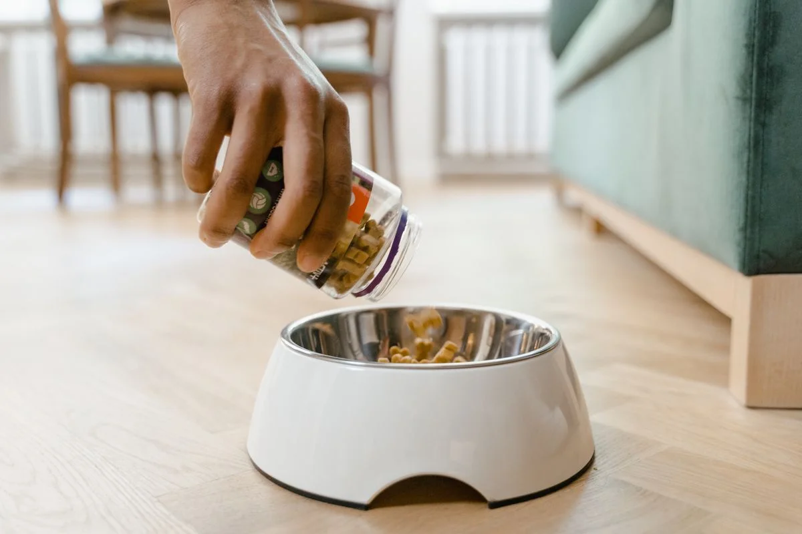
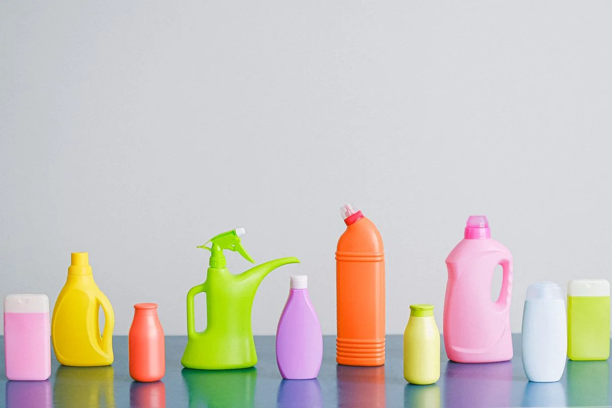

Este post contém links de afiliado. Podemos receber uma comissão em compras feitas através deles, sem custo adicional para você.
Comedouro automático sujo é uma das principais causas de mau cheiro, atração de insetos e até recusa do pet em comer — e, diferente de um pote comum, não dá para simplesmente jogar tudo na máquina de lavar louça. Este guia mostra como limpar cada parte do equipamento sem danificar o motor ou a placa eletrônica, e com que frequência repetir cada etapa.
Key Takeaways
- A base com motor e placa eletrônica nunca deve ser mergulhada em água — limpe só com pano úmido.
- Pote e reservatório removíveis podem ser lavados com água e detergente neutro, mas precisam secar completamente antes de voltar ao equipamento.
- Limpeza leve a cada 2-3 dias e limpeza completa semanal é a rotina recomendada para uso doméstico normal.
- Ração úmida ou empedrada dentro do reservatório deve ser descartada, nunca reaproveitada.
Este guia complementa o guia completo de comedouro automático para pet, que cobre desde a escolha do modelo até a configuração inicial.
Um comedouro automático bem configurado, mas mal higienizado, ainda representa risco para a saúde do pet. Resíduos de gordura da ração se acumulam no mecanismo dosador e nas bordas do pote, criando um ambiente propício para fungos e bactérias. Em climas mais quentes e úmidos — comum em boa parte do Brasil — esse acúmulo acontece mais rápido do que muita gente imagina, mesmo em equipamentos usados há pouco tempo. Bactérias como E. coli e Salmonella formam uma camada viscosa chamada biofilme em potes lavados com pouca frequência, e a recomendação veterinária é lavar o pote de ração regularmente — pelo menos uma vez por semana, com a água trocada diariamente — justamente para evitar esse acúmulo (Cachorro Natureba, retrieved 2026-08-21).
Além do risco sanitário, sujeira acumulada pode interferir no funcionamento do sensor de porção e no mecanismo dosador, causando liberação incorreta de ração — problema que muitas vezes é confundido com defeito de fabricação quando na verdade é falta de limpeza.

Antes de qualquer limpeza, desligue o comedouro e retire da tomada (ou remova as pilhas, se for o caso). Isso evita acionamento acidental do mecanismo dosador durante a limpeza e reduz o risco de choque ou dano ao circuito.
Retire o pote de alimentação, a tampa do reservatório e, quando o modelo permitir, o tubo dosador. Consulte o manual do seu modelo específico para confirmar quais peças são de fato removíveis — forçar peças não projetadas para desmontagem é a causa mais comum de quebra de encaixes plásticos.
Use água morna (não fervente) e detergente neutro, esfregando suavemente com a escova macia nos cantos onde a ração costuma grudar. Evite deixar as peças de molho por longos períodos, especialmente se tiverem partes plásticas finas ou juntas de vedação.
A base — que abriga o motor, a placa eletrônica e, em modelos com Wi-Fi, a antena — deve ser limpa apenas com um pano levemente úmido, passado por fora, e nunca submersa ou lavada sob torneira. Preste atenção especial às áreas próximas às entradas de cabo e ao compartimento de pilhas.
Essa é a etapa mais negligenciada. Toda peça precisa estar completamente seca antes de voltar ao equipamento — umidade residual em contato com ração nova é a receita perfeita para mofo e empedramento. Deixe secar ao ar livre por pelo menos 30 minutos ou seque manualmente com pano limpo.
Com tudo seco e remontado, reabasteça o reservatório e faça um teste manual de liberação de porção antes de voltar à rotina programada, garantindo que o mecanismo não travou durante a limpeza.
| Item | Frequência recomendada |
|---|---|
| Pote de alimentação | A cada 2-3 dias |
| Reservatório de ração | Semanalmente |
| Mecanismo dosador | Semanalmente |
| Base externa (pano úmido) | Semanalmente ou quando visivelmente suja |
| Verificação de umidade interna | A cada reabastecimento |
Pets que comem ração úmida misturada, vivem em climas muito quentes ou têm o comedouro exposto à luz solar direta podem precisar de limpeza mais frequente do que a tabela acima sugere.
Usar produtos abrasivos ou alvejante concentrado. Além de deixar resíduo químico em contato com a ração, produtos abrasivos riscam o plástico, criando microfrestas onde sujeira se acumula ainda mais rápido nas próximas limpezas.
Lavar a base na pia ou no chuveiro. É a causa mais comum de queima de placa eletrônica em comedouros automáticos — mesmo modelos com alguma resistência a respingos não são projetados para submersão.
Guardar ração antes de secar totalmente o reservatório. Gera empedramento e, em casos mais graves, obstrução do mecanismo dosador, exigindo desmontagem mais invasiva para desentupir.
Ignorar o cheiro como sinal de alerta. Se o comedouro está com cheiro de ração velha mesmo pouco tempo após a limpeza, geralmente há resíduo escondido em uma junta ou canto de difícil acesso que precisa de atenção extra.
É comum o tutor se perguntar se a rotina extra de limpeza do comedouro automático compensa frente a um pote comum, que basta lavar na máquina de lavar louça. Para quem já decidiu que a vale a pena um comedouro automático, a resposta prática é sim: a limpeza extra é pequena perto do benefício de manter a rotina alimentar do pet mesmo com o tutor fora de casa. O importante é incorporar a limpeza como parte da rotina, e não como uma tarefa esporádica.
Apenas as partes removíveis, como pote e reservatório de ração, quando o fabricante indicar que são laváveis. A base com o motor, a placa eletrônica e o compartimento de pilhas nunca devem ser mergulhados ou lavados diretamente com água — use um pano levemente úmido apenas nessas partes.
Uma limpeza leve do pote a cada 2 a 3 dias e uma limpeza completa do reservatório, do mecanismo dosador e da base uma vez por semana costuma ser suficiente para uso doméstico normal. Ambientes mais úmidos ou quentes pedem limpeza mais frequente.
Sim, um detergente neutro e sem fragrância forte é suficiente e seguro. Evite produtos abrasivos, alvejantes ou desinfetantes concentrados, que podem deixar resíduo tóxico em contato com a ração ou danificar plásticos e vedações do equipamento.
Esvazie totalmente o reservatório, seque bem antes de reabastecer e verifique se há umidade entrando pela tampa ou por condensação. Ração empedrada geralmente indica exposição à umidade e deve ser descartada, nunca devolvida ao reservatório.
Limpar o comedouro automático regularmente não é opcional — é o que garante que o equipamento continue dosando porções corretamente e sem virar fonte de contaminação para o pet. Com uma rotina simples de poucos minutos por semana, alternada com uma limpeza leve a cada dois ou três dias, o equipamento se mantém seguro e funcional por muito mais tempo. Para quem ainda está escolhendo o modelo ideal, vale revisitar o guia completo de comedouro automático para pet antes de comprar.
Escrito por Nildo Alves. Veja nossa política editorial e como verificamos as fontes citadas neste artigo.
🐾 Confira o preço e a disponibilidade atual no Mercado Livre.
Ver no Mercado Livre →Link de afiliado: podemos receber uma comissão por compras feitas através deste link, sem custo adicional para você.
Nildo Alves — curadoria de produtos pet no Smart Pet Gadgets. Testa e pesquisa produtos para cães e gatos, cruzando especificações de fabricante com boas práticas veterinárias e dados de mercado.
Sobre o Smart Pet Gadgets · Contato · Política editorial e de afiliados